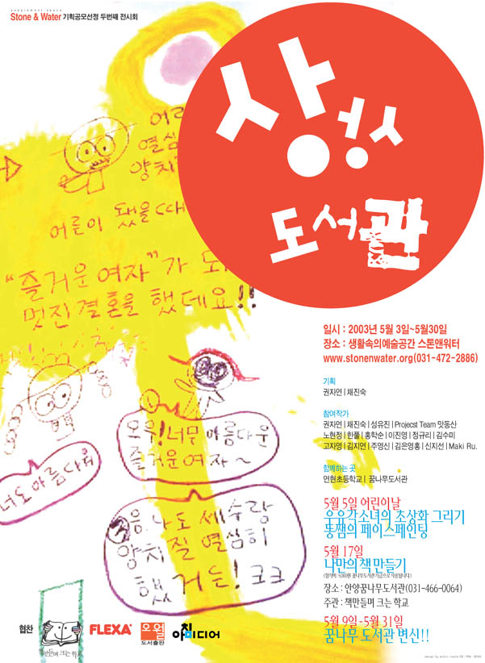

상상 도서관
2003 스톤앤워터 전시지원공모선정 두번째 전시
2003_0503 ▶ 2003_0530
초대일시_2003_0503_토요일_02:00pm

참여작가
권자연_채진숙_성유진_고자영_정규리_노현정_한풀_홍학순_이진영_김수미
김지연_주영신_김은영홍_신지선_프로젝트 팀 맛동산_Maki Ru
함께 하는 곳_연현초등학교_꿈나무어린이도서관
협찬_FLEXA 어린이가구_책 만들며 크는 학교_꿈나무어린이도서관_도서출판오월_아침 미디어
책임기획_권자연_채진숙
supplement space Stone&Water
경기도 안양시 만안구 석수2동 286-15번지
Tel. 031_472_2886
_waifu2x_photo_noise3_scale.png)
어린이들이 보고 느끼고 즐기고 때로는 황당해 하는 책을 만든다. 그리고 아이들이 책을 편하게 읽을 수 있는 분위기를 만들어 준다. 아이들은 바닥에 눕거나 우물 같은 구조물에 쏙 들어가 책을 읽게 되고 2층 침대 같은 곳에 올라가거나 그 밑에 기어 들어가 책을 읽기도 한다. 잔디밭과 나무등걸로 만들어진 옥상도서관도 있다.
● 작가들은 다양한 모습의 책을 제작한다. 권자연은 여러 가지 색과 여러 종류, 여러 질감(한지, 은박지, 비닐 등)의 종이 묶음의 스케치북을 제작하여 아이들로 하여금 하얀 스케치북이 아닌 다른 색과 질감 위에서 그림을 그리는 느낌을 경험하게 한다. 채진숙의 경우 우리와 친숙한 신체의 일부를 스티커북으로 만들어 전시장을 찾는 아이들이 자유롭게 직접 서로에게 붙여주고 가져갈 수도 있게 한다.
_waifu2x_photo_noise3_scale.png)
노현정의 경우 책을 박스 형태로 만들어서 아이들로 하여금 박스에서 퍼즐 조각들을 꺼내서 조립하고 그것을 가지고 바닥에 놀수 있게 하였고 성유진의 경우 아주 커다란 책을 만들어 아이들이 마치 동화책 주인공이 되는 듯한 느낌을 주게 할 것이다. 고자영의 경우는 우리가 생활하는 공간이나 동물원같이 아이들이 친숙한 공간을 팝업북 형식으로 만든다. 홍학순의 경우 인근 초등학교에서 케리커처한 아이들 모습을 벽에 그리고 각 반별로 책을 만든다. 정규리, 김수미, 신지선, 한풀, 김지연의 경우는 책이라는 틀을 유지하면서 상상력을 줄 수 있는 스토리와 이미지를 전개할 것이며 마키 루의 경우는 자기가 만든 동화책을 영어로, 일본어로, 한글로 제작한 뒤 그것을 읽는 일본아이들, 캐나다 아이들, 그리고 한국 아이들을 영상에 담아 비디오로 보여주게 될 것이다. 김은영홍같은 경우는 돌돌 말은 책을 만들어 마치 타월처럼 책장에 꽂아 진열하거나 매달고 주영신과 이진영의 경우 투명한 비닐이나 아크릴을 응용하여 책의 개념을 확장시켜 공간 속에 꾸민다. 맛동산의 경우 컴퓨터와 센서를 이용한 불자동차 책을 만든다.
_waifu2x_photo_noise3_scale.png)
_waifu2x_photo_noise3_scale.png)
_waifu2x_photo_noise3_scale.png)
또한 이번 전시에서는 책을 진열하는 공간과 방식에 대한 것도 염두하여 갤러리 내부를 디자인하게 될 것이다. 따라서 아이들의 특성을 고려해 우물 같은 구조물을 만들어 아이들이 쏙 들어가 책을 읽을 수 있는 공간을 제공하게 되며 아이들이 편히 눕거나 놀면서 책을 볼 수 있도록 2층 침대 같은 구조물과 숨어서 책을 읽는 비밀스러운 공간도 제작한다. 또 박스를 제작하여 아이들이 책을 담아 자유롭게 원하는 곳에 끌고 가서 읽을 수 있게도 할 것이다. 신발은 벗고 들어가게 되며 쿠션 같은 것들도 전시장에 두어 아이들로 하여금 최대한 편하게 책을 접할 수 있게 만든다.
_waifu2x_photo_noise3_scale.png)
_waifu2x_photo_noise3_scale.png)
이 전시와 관련하여 지역 프로그램으로 현재 폐관될 위기에 처한 안양 꿈나무 도서관과 책 만들며 크는 학교와의 연계 프로그램으로 나만의 책 만들기 프로그램이 진행 중이며 아이들이 집에 가서 풀어보면서 전시를 다시 떠올리게 할 수 있는 워크북(workbook)개념의 도록을 참여 작가 모두의 공동 작업으로 제작하게 된다.
■ 권자연·채진숙
● 『상상 도서관』展 부대행사
2003_0505_월요일_어린이날 행사
우유각소녀의 초상화 그리기, 똥쨈의 페이스 페인팅
장소_보충공간 스톤 앤 워터
2003_0517_토요일_나만의 책 만들기
장소_꿈나무어린이도서관 Tel. 031_466_0064
주관_책 만들며 크는 학교
참가비_5000원_참가비는 꿈나무어린이도서관 기금으로 쓰여집니다.
2003_0509 ▶ 2003_0531_꿈나무어린이도서관 재구성하기
『상상 도서관』展 참여작가들이 꿈나무어린이도서관 내부를 변신시키는 작업입니다.